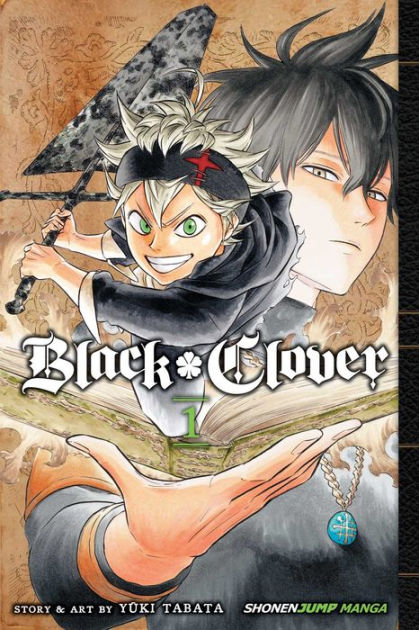

One of the things I do on my downtime is read manga. I've seen quite a handful of different genres of anime,so it will be hard to make a list of my top three favorites.
Alright starting from number one is Black Clover. Second is Chainsaw Man and in third is
By Yuki Tabata
Black clover is about a world were magic is everything and society is divided with royals and peasants. One day two young boys named Asta and Yuno are dropped off at a church/orphange.
As time passes both boys grow up, Yuno gains strong wind magic and Asta has no magic. They both have the same dream of becoming the "wizard king", the highest military position that is looked up by the people in the kingdom.
Now Asta knowing he has no magic still pushes to becoming stronger and says his magic is never giving up. Eventually the two head out to get their grimoires(book of spells) and Asta doesn't get his.
As more of the plot goes on, Asta does get his grimoire of ant-magic, magic that can cancel out other magic. Sooner or later he joins the magic knights known as the Black Bulls. From there he is faced with many challenges.
No matter what he faces his magic is never giving up.
By Tatsuki Fujimoto

Chainsaw man is about a young man named Denji that works for the Yakuza to pay off his father's debt that he left him to deal with. He becomes a devil hunter with his devil chainsaw dog. In this world devils are made by people's fears, so if enough people feared something there would be a devil for it.
Denji's life is very sad he lives in a shed and has to sell some of his organs to help pay off the debt. The only dream he wants in his life is to have a girlfriend, bread with jelly, and having a normal life.
Later on the Yukuza betrays on Denji and makes a contract with a zombie devil to make there clan stronger by turning themselves into zombies and killing Denji was part of the contract. He gets brutally killed with his chainsaw devil dog and thrown in the dumpster, but Denji's blood falls onto the dogs mouth which makes the devil regenerate and becomes Denji's heart.
In purgatory both Denji and his chainsaw dog meet and the dog tells Denji this is our contract, I want to see your dreams come true. Then Denji is brought back to life, but is suited up with chainsaw arms and has a chainsaw for a head. In short he comes a hybrid of human and devil.
Denji then kills the zombie devil and the whole Yukuza clan. The next morning other devil hunters come to kill the zombie devil, but is met with Denji. Denji then collapse and is caught by one of the hunters named Makima and is turned back to normal.